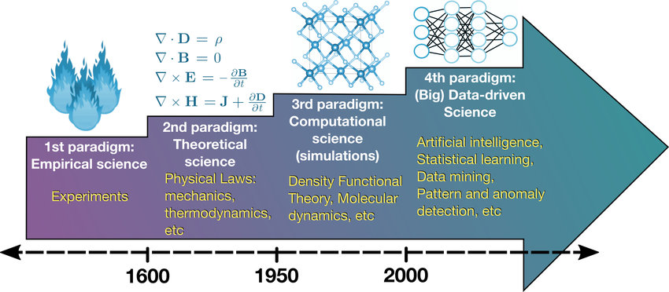

# Response plot using Turtle Graphics
import turtle
import math
squirtle = turtle.Turtle()
# set ranges of our coordinates: start_x, start_y, end_x, end_y
turtle.setworldcoordinates(0, -1.1, 300, 1.1)
# equation parameters
chi = 1.0
omega = 0.3
csi = 0.05
for t in range(0,300): # from t=0 to t=299 s
x = chi * math.exp(-csi * omega * t)*math.cos(omega * t) # calculate x according to our equation
squirtle.goto(t, x) # make the turtle go to (x=t, y=x)
turtle.mainloop()2: Examples and Discussion
Introduction: the age of computer simulations
- Computer simulations and models changed contemporary science and engineering forever!
- Philosophers of science & technology are still trying to understand what these changes mean…
- A nice (non-technical) introduction to this theme: Juan M. Durán, Computer Simulations in Science and Engineering
- Other foundational books on the philosophical problems of simulations:
The four science paradigms, according to Rob Gray: 
Epistemic functions of simulations
- Problem-solving: they help to solve problems that may be analytically intractable. For example, finding solutions to the Travelling salesman problem.
- Explaining phenomena: we can find hypotheses to answer a question like “why \(x\)” by trying to reconstruct how \(x\) came to be. For example, neuron simulations help explain some activation patterns found in these systems.
- Visualizing phenomena: simulations permit us to reconstruct phenomena in visual ways as a form of increasing understanding. For example, this is traditionally sough in the area of fluid simulation.
- Predicting phenomena: for example, we can simulate a market to predict its dynamics in the future, or simulate the spreading of a disease in order to be prepared for different scenarios.
- Explore different possibilities: simulations don’t require a “material” setup for experimentation and thus can be cheaper, faster and more controllable (i.e., you can “pause” time to observe certain features)
- On the other hand, though, we need to be sure we are representing reality in an accurate way…
Example 1: Converting measurements
Write a program that prompts for and receives from the user the diameter of a circle in inches and prints the circumference and area of that circle in centimeters and square centimeters respectively.
Use constants and good programming style.
Discussion: verifying simulations
How can our last program fail?
Truncation and rounding off numbers: too large or too small inputs may generate overflow and, therefore, imprecise results
Calibration: are our input values accurate enough? If they aren’t, our calculations may even amplify innacuracies (something explored in measurement theory)
- Or even in use of constants: pi, avogadro’s number, gravitational constant… how much precision do we need?
Can we be sure that our hardware is working properly?
- For example, without memory and processing power, we can’t achieve too much precision. Our calculations may be truncated or take too much time to run.
- Soft errors: damage or electromagnetic interference in the hardware can really mess things up!
- For example, Intel has been systematically working towards incorporating a built-in cosmic ray detector into their chips. The detector would either spot cosmic ray hits on nearby circuits, or directly on the detector itself. When triggered, it activates a series of error-checking circuits.
- Design errors: for example, the (in)famous Pentium FDIV bug would calculate numbers with less precision than the correct numbers, and costed Intel Co. a loss of about $500 million in revenue with the replacement of the flawed processors.
- All these considerations are very important in the design of High-Performance Computing applications.
Can we be sure that our modules and libraries are correctly implemented?
- For example, an error found around 2016 on a neuroscience software suggested that many publications could be invalid. Everyone was using the same software and wouldn’t pay attention to that!
Example 2: plotting time response of a system
Consider the mechanical system illustrated: a mass connected to a spring and a damper. If the mass is displaced and then released, its response will depend on the mass (\(m\)), spring constant (\(k\)), and damping coefficient (\(c\)). The differential equation representing this system is a second order system like the following:
\[m \frac{d^2 x}{dt^2} +c \frac{dx}{dt}+kx=0\] We can then solve the differential equation to determine the time response. If the mass is pulled back and released the system time response will look something like the following:
\[x(t)=\chi e^{-ζωt} cos(ωt)\] where \(\chi\) (chi) is the magnitude of the initial displacement, \(ζ\) (zeta) is the damping coefficient, and \(ω\) (omega) is the natural frequency of the system. While this second order equation represents a mechanical system, there are electrical systems comprised of resistance, inductance, and capacitance (RLC circuits) that exhibit similar current vs. time responses.
Now, we will make a program to calculate the time response of this system and plot it graphically using Turtle Graphics. Observe how changing some of the parameters will change the response.
Discussion: validating simulations
Can we really trust that what we are simulating will hold in practice?
Some problems:
Epistemic opacity: it is hard and sometimes even impossible to trace all the steps and calculations necessary for us to arrive in a certain result with a simulation. Thus, we can say the simulation is not transparent.
Are they better or worse than material experiments? This is still a big discussion in academic literature: the materiality argument, that would pose that it is still better to make our experimentation in the real world. However, even in “material experiments”, how “real” the world we are dealing is still real?
What impact do they have in our way of doing science and promoting virtue? Is science now just standing in front of a screen dealing with abstract entities?